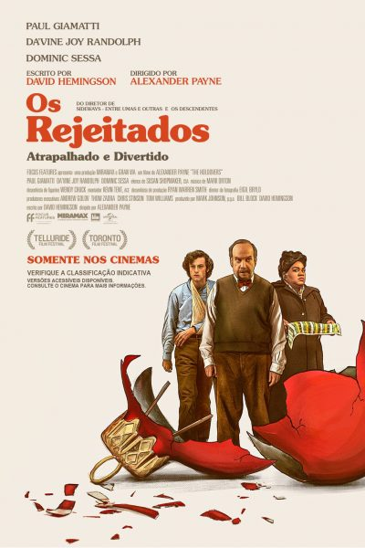

“A entidade” Um autor de romances criminais encontra uma caixa com filmagens antigas de crimes horripilantes, que parecem ter sido cometidos por um assassino em série. Ao investigar, ele e sua família se tornam alvos de uma entidade sobrenatural maligna. Nota: 10/10 CLIQUE AQUI PARA VER O TRAILER
“Barbie” Barbie começa a ter pensamentos estranhos e sua aparência muda, então ela parte para o mundo real com Ken para tentar encontrar uma solução e voltar a ser uma boneca perfeita. Nota: 10/10 CLIQUE AQUI PARA VER O TRAILER

“Pobres criaturas” A jovem Bella Baxter é trazida de volta à vida pelo cientista Dr. Godwin Baxter. Querendo ver mais do mundo, ela foge com um advogado e viaja pelos continentes. Livre dos preconceitos de sua época, Bella exige igualdade e libertação. Nota: 10/10 CLIQUE AQUI PARA VER O TRAILER
Um professor rabugento, uma cozinheira de luto e um aluno inteligente e encrenqueiro são obrigados a passar o Natal juntos na escola e criam um vínculo inesperado. Nota 10/10 CLIQUE PARA ASSISTIR AO TRAILER

Durante a Segunda Guerra Mundial, o comandante de Auschwitz, Rudolf Höss, e sua esposa, Hedwig, se esforçam para construir uma vida idílica para sua família em uma casa vizinha ao campo de concentração. Nota 10/10 CLIQUE PARA ASSISTIR AO TRAILER